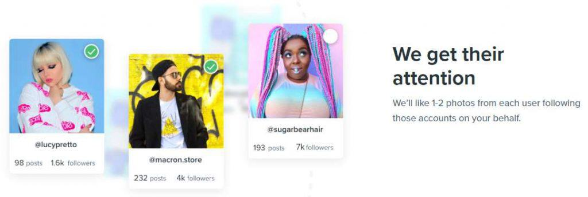
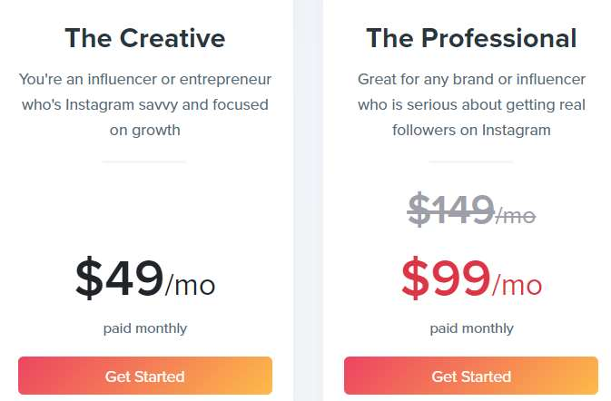

You probably came across an Instagram management tool called Kickstagram. It’s one of the more popular online-based Instagram management platforms. And you’re wondering if it’s right for you. If you’re looking for an unbiased and honest Kickstagram review then you came to the right place.
When you’re done reading this review, you’ll know if Kickstagram is legit, and whether or not it’s the right tool for your needs. The good news is the platform is still going strong even after many similar tools have been discontinued. Without further delay, let’s get started.
Here’s the Deal:
Kickstagram is a decent tool. But after testing out their services for a few days, I feel like our recommended tools still have it beat. If you’re looking for a list of tried and tested Instagram tools, take a look at our full list here.
A Kicksta Alternative… KENJI
For instance, one of our recommended bots is Kenji, a software that does basically the same thing as Kicksta. But the reason we recommend KENJI and not Kicksta is because KENJI provides more features for a lower price. It also uses machine-learning to cover your footprints, so it’s incredibly safe.
The best part is you can take KENJI for a 3-day test-drive completely for free, no strings attached. You don’t even need to enter any credit card information.
Click Here to Create a Free Account
First Things First:
First impressions are as important. When I first landed on the Kickstagram website, it looked much like any other Instagram management bot.
On closer inspection, I learned their entire service is based automating one task: liking images.You might be wondering how liking images can add more followers to your account, and I’ll explain why in the next section.
Before we continue, I would like to point out that the company was previously called “Kickstagram” but recently they shortened it to “Kicksta” , both refer to the same platform.
How Does Kicksta Work?

When you like someone’s image, it sends a notification to their app, which encourages them to visit your profile and return the favor. It’s similar to the classic follow-and-wait-for-follow-back marketing strategy a lot of social media marketers use. The act of liking other user’s posts is often referred to as “sending out social pings” and it’s one of the core tasks social media marketers do on a daily basis.
When you sign-up to the platform, they’ll ask for your Instagram login information. Once the tool connects to your account, they’ll ask for a list of target users. And the tool will take it from there.
These users will act as a filter to make sure the users the bot interacts with are somewhat targeted to your industry and interests. From there, the bot will work in the background, browsing through profiles and liking images. It looks like the tool can like an average of 30,000 photos a month.
It’s important to keep in mind the tool works completely online. There’s no need to download any files or run any programs on your computer or a virtual private network. Everything is done online, through their online platform, a feature that’s always nice to have (unlike Massplanner).
So that’s the short version of how the tool works.
Kicksta Prices and Payment Plans:
At the moment, Kicksta has two payment plans; Creative and The Professional.

Creative is more for individuals or small teams. It offers moderate growth, and up to 10 audience targets. The price for the Creative plan comes to $49 a month.
The Professional is for more serious brands or large teams. They claim it offers maximum growth, several new filters, and up to 50 targets. Not to mention the premium email support. It costs $99 a month.
We’ll talk about the features included in either plan later on in this review, but first let’s talk about the price.
I know what you’re thinking:
“$99 a month for a tool that only offers automatic likes? Isn’t that expensive?“.
The answer is yes. It is expensive. That’s one of the reasons I recommend other tools because not only are they cheaper but more features are included.
In my opinion, Kicksta is slightly over-priced, especially for what they offer at the moment. If they add more features in the future, I’ll probably change my opinion.
Granted, the service is “Safer” than other bots because it doesn’t spam as much (more on that later). Nevertheless, with most other tools auto-like is included in a bundle of other auto-features, it’s not the only feature.
Now let’s look at some of the features exclusive to Professional accounts.
Is Kicksta Worth It?
To save you some time, I’ll cut to the chase. What Kicksta does, it does quite well. Their service quality is top-notch and it’s clear the strategy works. However, in my opinion, Kicksta is not worth it. I feel like the platform is a bit too expensive and should include more features for the price. Continue reading to learn more.
Exclusive Features (Professional only):
Keep in mind, these features are exclusive because they’re only available when you subscribe to the Professional payment plan. But when compared to other management tools, these features aren’t exactly unique.
Gender Targeting
This one is rather self explanatory; it allows you to add a target for specific genders. Unfortunately this feature is only available with the Professional plan.
Hashtag Targets
Once again, hashtag targets aren’t a unique feature to Instagram management tools. As a matter of fact, most marketing tools allow you to target hashtags, and with their most basic memberships too. Nevertheless, with a Professional account you have access to this service.
Premium Email and Chat Support
Personally, I feel like email and chat support should be included in all packages, even the free versions. I don’t see why this needs to be feature only for Professional users.
Other than the email support, there’s a live-chat window you can use to ask the support questions. It’s quite useful. But I feel like it should be available to all users, not exclusive to the highest paying users.
A couple other features are location targeting and blacklists. Location targeting is self-explanatory, it programs the bot to only interact with content that is in a certain location. Great for building local brands. Blacklist does what you think, creates a list of accounts you do not wish to interact with.
Kicksta Pros: What We Liked
Now that you know about Kicksta’s core features, I’ll share with you what I liked most about this platform.
Low Risk of Being Banned 👍
For starters, I like the safety aspect. At least you don’t have to worry about your account being banned for following too many users. It seems like Instagram doesn’t really care how much content you like from your account, so it’s rather safe. To reiterate, Kicksta only offers one automation service; likes.
Less “Messy” Follower to Following Ratio 👍
When it comes to using automation tools, specifically auto-follow ones, what ends up happening is you follow too many people with few people following back. We know this ratio needs to be somewhat equal but it’s hard to keep under control if you’re using an auto-follow bot. With Kicksta, you don’t need to worry about that because it only likes content, it doesn’t follow anyone.
More Organic Growth 👍
Everyone hopes their accounts can grow organically, but it often takes longer than expected, hence the use of automation tools. However, with Kicksta your account will grow organically because the people who follow you are genuinely interested in your profile.
They see that you liked their content, check out your profile, and follow you. Granted, the growth is much slower than using other automation tools. It’s something worth testing out, at least. Combine the service with well-thought-out targets, and it won’t be long before you see some new users following your profile.
Decent Reporting Tools 👍
I’m happy to say Kickstagram has great reporting tools. They’ll send you graphs and charts showing your accounts performance over time, including new followers and engagement rates. You can also see the account quality of the accounts you set as targets, a great way to avoid interacting with spam.
Great Security 👍
According to the company, they use bank-level encryption for all user data, so you don’t need to worry about your account being hacked or stole. The website uses a 256-bit SSL certificate.
Works Completely on Auto-Pilot 👍
After you set your targets and configure your settings, the bot will run completely on autopilot, in the background. So, you can just sit back and watch as people check out your profile. Toggle the bot on and off at any time.
Kickstagram Downsides: What We Didn’t Like
But the tool isn’t perfect. Here’s what we didn’t like about the software:
Expensive. 👎
As we mentioned earlier, Kickstagram is expensive. Granted, the tool does work as promised, but I feel like it doesn’t offer enough features to justify the price.
For the best results, you’ll need the Professional subscription which comes to $99 a month. Even though with this plan you can access a good amount of features, it really only automates likes. For this price, you would expect more features.
Lacks Essential Features 👎
To expand on the point earlier, Kicksta lacks a lot of essential features that you would assume an Instagram bot would have. Besides the usual automation services, Kicksta lacks other features too. For instance, the tool doesn’t have an upload or post schedule service. In short, I feel like Kicksta’s weak point is the lack of quality features. And the only thing it automates are likes.
No Free Trial 👎
Unlike our recommended Instagram tools, the Kicksta platform does not offer any free trials. To use the software you have to subscribe to one the plans. On other hand, they have a 14-day refund window, but it would still be nice to have the option to test-drive the program with a free trial.
The Bottom Line:
Although Kickstagram is a well-designed software that does a great job at automating likes, when compared to other tools, it comes up short. I believe the tool can get you more genuine followers on Instagram, but you shouldn’t expect any drastic changes.
Personally, if I was looking to get the most bang for my buck, I would look for a management software that includes a wide range of automation features. Even Kicksta’s blog recommends using other tools such as Later to schedule posts for more growth. Overall, the platform is not a scam, and it’s a decent tool. But I feel like it needs just a bit more to be worth it.
On the other hand, the strategy is solid and the act of liking user’s posts is not dangerous. I never heard of Instagram banning someone for liking too many posts. I feel like Kicksta will be around for a long time because it doesn’t violate Instagram’s terms of use and doesn’t contribute to the spam that plagues the social media platform.
If you’re looking for a decent Kicksta alternative, I recommend KENJI because it’s the most affordable Instagram bot out there, and it offers more automation features. To compare, Kenji has two payment plans; $19 or $29 a month. Kicksta’s are $49 or $99 a month. As you can see, KENJI is much cheaper!
Thanks for taking the time to read this Kickstagram review!